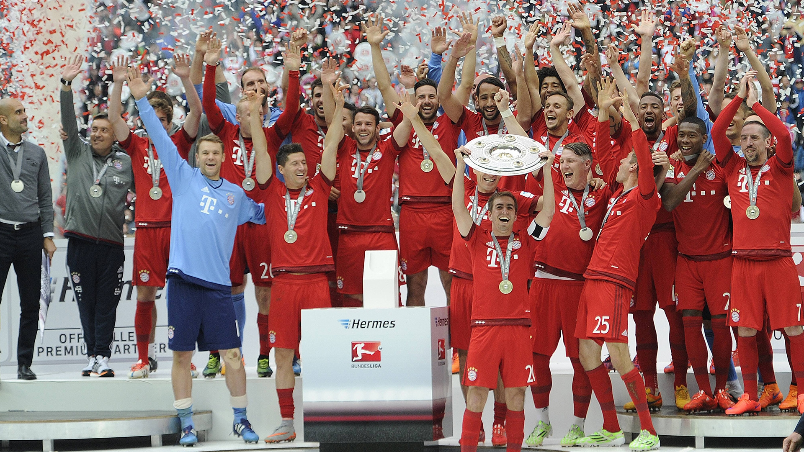
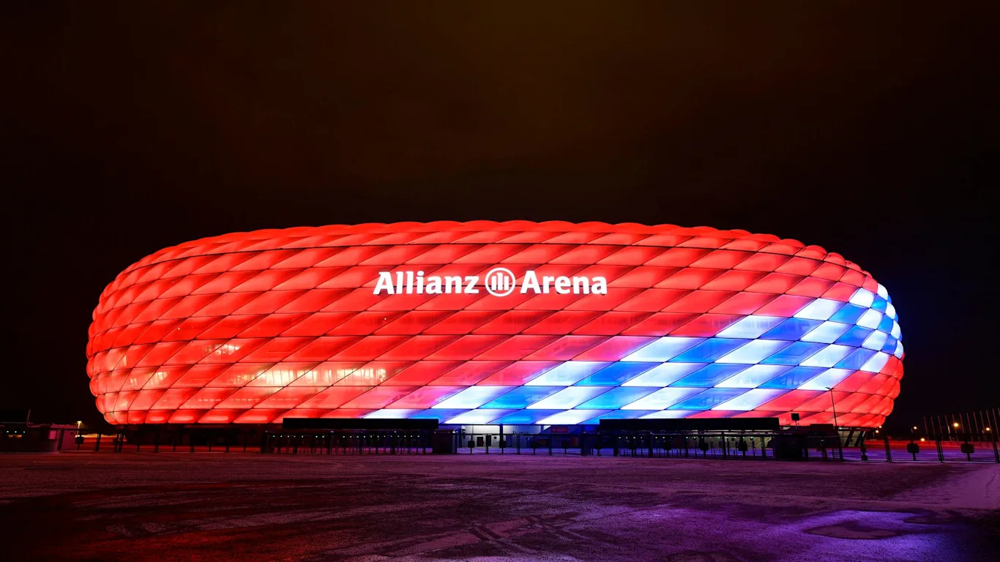
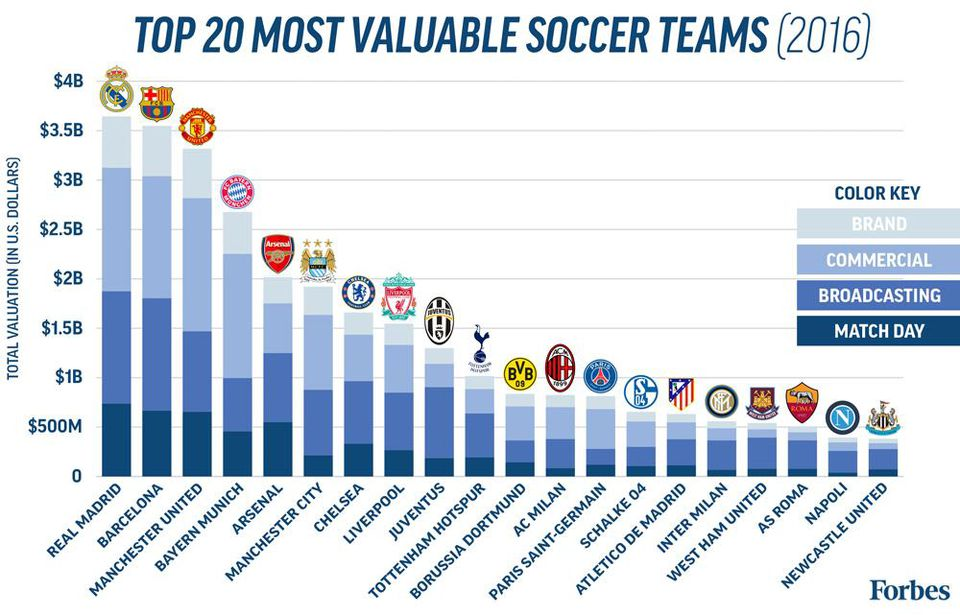

1.
Most successful football club in Germany
Bayern is historically the most successful team in German football, as they have won the most championships and the most cups. They are also Germany's most successful team in international competitions, having won eleven trophies. Bayern is one of only five clubs to have won all three major European competitions and also the last club to have won the three consecutive European Cup title in old straight knockout tournament format, entitling them to wear a multiple-winner badge during Champions League matches.
2.
One of the most famous stadium in the world
The Allianz Arena is the home ground of Bayer Munich Football Club. The external view is splendid, like a outer space ship. At night it has lights of different colours to give it an amazing scene. Normally it is in red which is Bayer Munich's home colour.
3.
One of the richest football club in the world
Based on four distinct categories* - Match Day, Broadcasting, Commercial, and Brand - FORBES has determined that Real Madrid remains soccer's most valuable football club with a $3.65 billion valuation, an increase of over $390 million from last year. In fact, the top four teams continue to maintain their ranks from last year, with Barcelona, Manchester United, and Bayern Munich continuing to hold second, third and fourth place, respectively.
